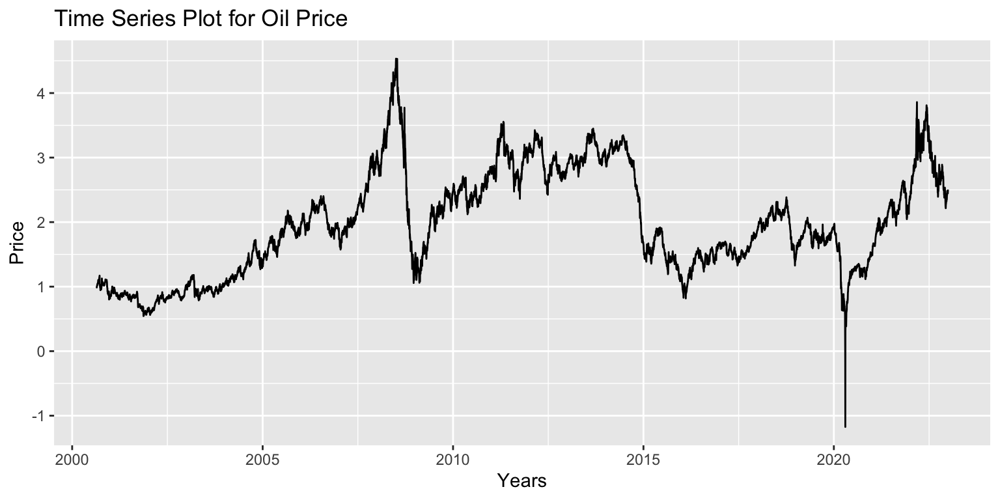
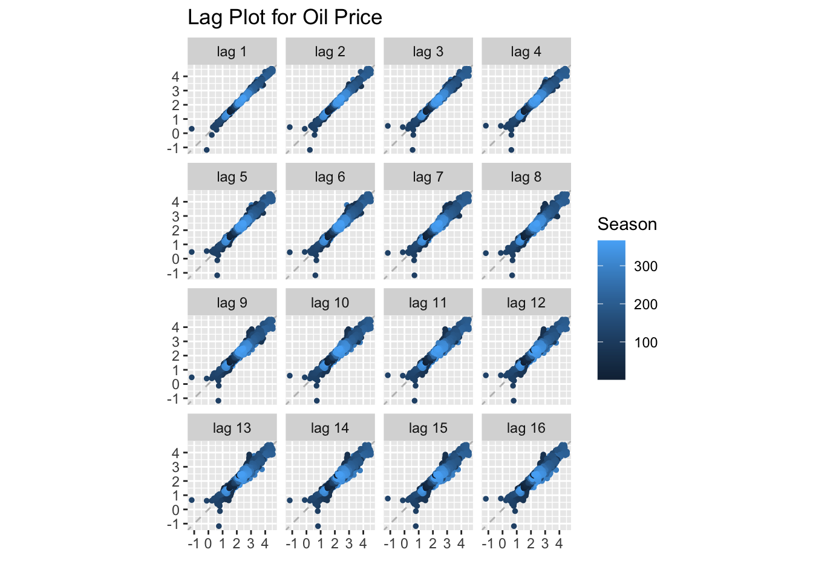
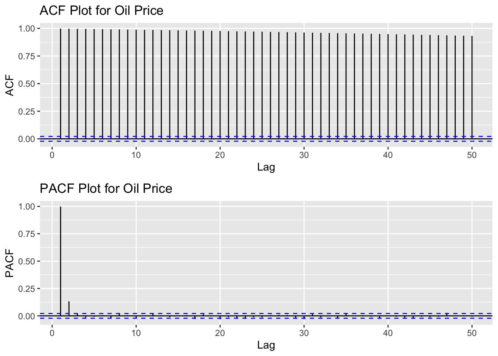
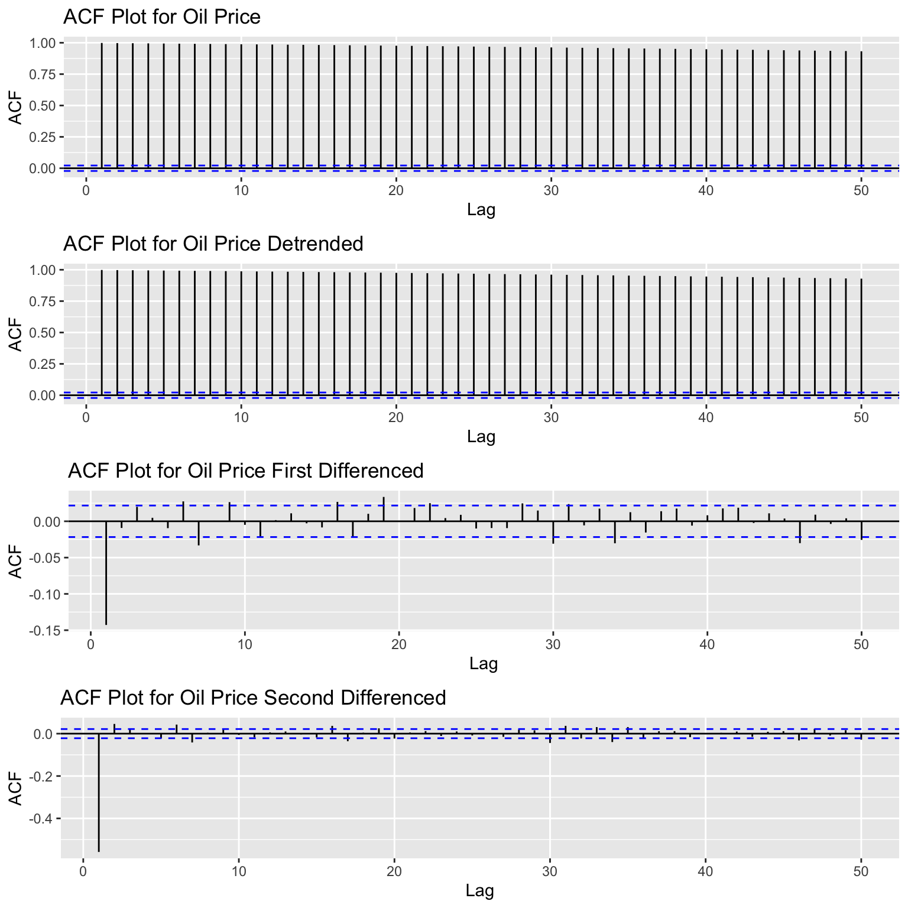

Crude Oil Price
In this section, I will explore some key steps in the time series exploratory data analysis of the oil price dataset. For each step, I will provide the code that has been used to create the visualizations and analysis, as well as insightful explanations and thorough analysis, to facilitate a deeper understanding of the dataset.
Below is the time series plot for the price of crude oil. From 2000 to 2008 there is an upward trend. Between the years 2008 and 2009 there was a strong downward trend that led to a trough. The trend began to recover until the end of 2015, when there was another sharp drop. For the next five years, we observe fluctuations in the price, but there is no clear trend. As it was mentioned in the Data Visualization section, there was a big drop at the beginning of the year 2020. This might seem like an outlier, since prices can’t be negative, but given the context, there is news that supports this event. After that, the price recovered and there is a clear upward trend. The price of oil is very volatile and there is no evidence of seasonality or cyclical patterns in this time series data set.
Time Series Plot Code
# Import dataset
df_oil_price <- read_csv('../data/viz_oil_price.csv')
# Select relevant columns
df_oil_price <- df_oil_price %>% select('date', 'adjusted')
# Create a sequence of dates from start_date to end_date
start_date <- as.Date(min(df_oil_price$date))
end_date <- as.Date(max(df_oil_price$date))
# Create data range
date_range <- seq(start_date, end_date, by = "1 day")
# Create a dataset with the date range
date_dataset <- data.frame(Date = date_range)
# Merge dataframes
df_oil_price <- merge(df_oil_price, date_dataset, by.x = "date", by.y = "Date", all = TRUE)
# Check for missing values
# is.na(df_oil_price$adjusted)
# Extract rows with missing values
df_na_rows <- df_oil_price[which(rowSums(is.na(df_oil_price)) > 0),]
# Extract columns with missing values
df_na_cols <- df_oil_price[, which(colSums(is.na(df_oil_price)) > 0)]
# Modify data
imputed_time_series <- na_ma(df_oil_price, k = 4, weighting = "exponential")
# Add modified data
df_oil_price <- data.frame(imputed_time_series)
# Change data type
df_oil_price$date <- as.Date(df_oil_price$date,format = "%m/%d/%y")
# Create time series
ts_oil_price<-ts(df_oil_price$adjusted,star=decimal_date(as.Date("2000-08-23",format = "%Y-%m-%d")),frequency = 365.25)
# Create time series plot
#ts_plot_oil_price <- plot(as.ts(ts_oil_price), main = "Oil Price Time Series", xlab = "Years", ylab = "Price")
# Show the customized plot
#ggplotly(ts_plot_oil_price)
ggplot(df_oil_price, aes(x = date, y = adjusted)) +
geom_line() + # Use geom_line() for a time series plot
labs(
title = "Time Series Plot for Oil Price",
x = "Years",
y = "Price"
)
To understand the autocorrelation pattern between the points and the different lags, the oil price time series data were plotted using a lag plot. There is high autocorrelation in all the lag plots. The data points and their lags show a clear linear relationship, where for the higher lags the data points are more spread out from the line of trend, but there is still high autocorrelation.
Lag Plot Code
# Lag Plot
gglagplot(ts_oil_price, do.lines=FALSE)+ggtitle("Lag Plot for Oil Price")
It is a challenge to define a decomposition method for this time series because there are many of fluctuations in the oil price. We can consider a multiplicative pattern for the data between the years 2003 and 2006, or an additive pattern for the data between the years 2010 and 2015. Either way, no decomposition method is applied at this stage.
To find the autocorrelation of the series with its lagged values, we plot the ACF. Clearly, this time series is not stationary as there is a high positive autocorrelation for the first 50 lags.
We plot the PACF, the partial autocorrelation function, to find the correlation of the residuals with the next lag. There is high partial autocorrelation for lags 1 and 2. The following lags fall within the confidence bands, indicating that there is no partial autocorrelation at these lags.
ACF and PACF Plot Code
# ACF Plot
acf_oil_price <- ggAcf(ts_oil_price, 50, main="ACF Plot for Oil Price")
# PACF Plot
pacf_oil_price <-ggPacf(ts_oil_price, 50, main="PACF Plot for Oil Price")
# Arrange Plots
grid.arrange(acf_oil_price, pacf_oil_price, nrow=2)
The results obtained when the Augmented Dickey-Fuller test is applied to the oil price time series can be found below. The p-value obtained is equal to 0.4251, which is higher than the 0.05 significance level. Considering the null hypothesis that the time series is not stationary, we cannot reject it, so we need to apply time series detrending and differencing methods to try to make it stationary.
Augmented Dickey-Fuller Test Code
test_oil_price <- adf.test(ts_oil_price)
print(test_oil_price)
Augmented Dickey-Fuller Test
data: ts_oil_price
Dickey-Fuller = -2.3618, Lag order = 20, p-value = 0.4251
alternative hypothesis: stationaryTo make the time series more stationary, we applied the detrending method to the fitted model of the oil price time series and viewed the results in the ACF plot. We also applied the first and second differences to the original time series and plotted the results in two separate ACF plots. The ACF plot of the original time series is shown first to compare the different models.
Detrending and Differencing Code
# Create fit data
fit_oil_price <- lm(ts_oil_price~time(ts_oil_price), na.action=NULL)
# ACF Detrended Plot
acf_2_oil_price <- ggAcf(resid(fit_oil_price), 50, main="ACF Plot for Oil Price Detrended")
# ACF Differenced Plot
acf_3_oil_price <- ggAcf(diff(ts_oil_price), 50, main="ACF Plot for Oil Price First Differenced")
# ACF Differenced Plot
acf_4_oil_price <- ggAcf(diff(diff(ts_oil_price)), 50, main="ACF Plot for Oil Price Second Differenced")
# Arrange Plots
grid.arrange(acf_oil_price, acf_2_oil_price, acf_3_oil_price, acf_4_oil_price, nrow=4)
Conclusion